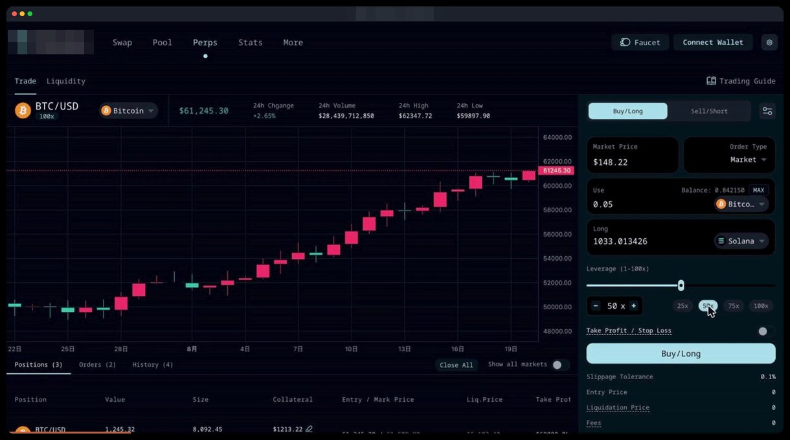
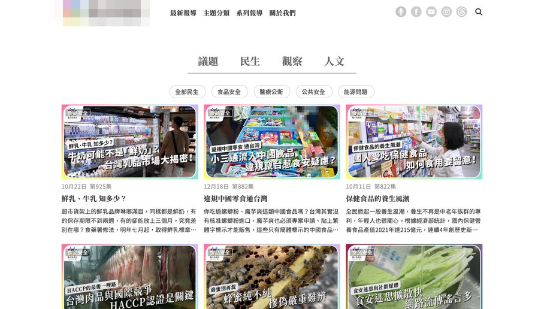
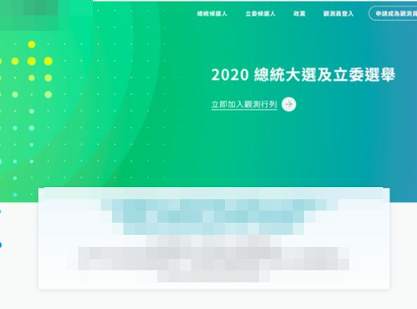
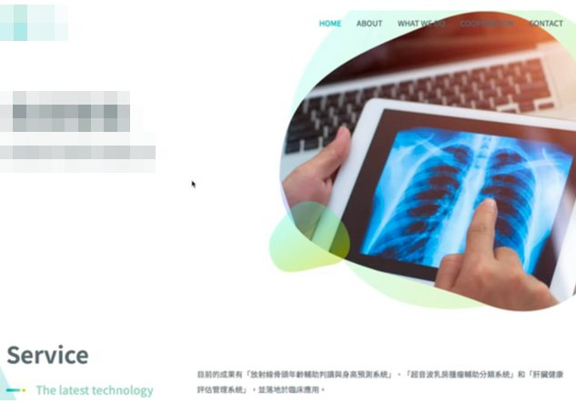
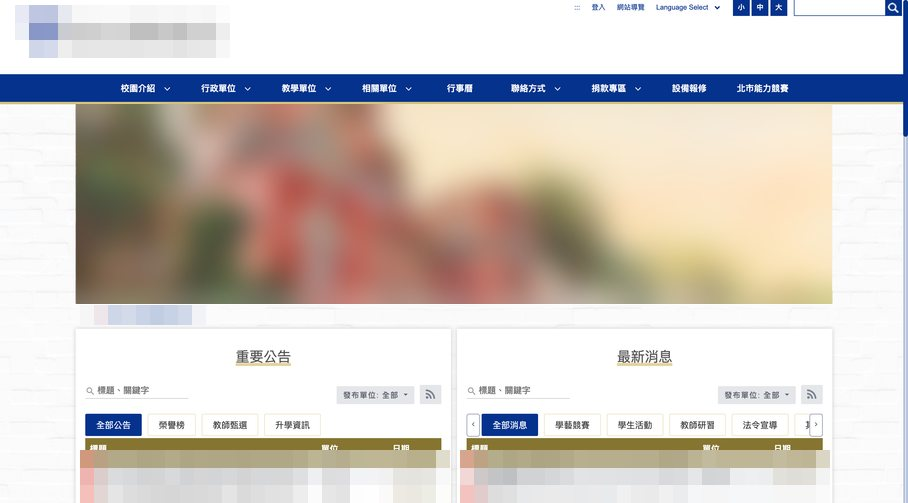

S-01
企業系統與管理後台
訂單、報價、帳務、文件簽核這類流程多、角色多的系統。從資料流與權限開始設計，讓多個系統維持一致的操作體驗。
適合前台、後台、內部工作台各自為政，越改越難改的團隊
→ 物流集團多系統平台
如果你的需求跨好幾項，例如「後台要重寫，順便把元件整理起來」，那正是我最常接到的狀況。
訂單、報價、帳務、文件簽核這類流程多、角色多的系統。從資料流與權限開始設計，讓多個系統維持一致的操作體驗。
把散落各頁的同名元件收斂成一套，附上 Props、用法與情境說明，對齊設計稿，新功能直接用既有元件組起來。
錢包連接、合約讀寫、鏈上模擬報價、交易狀態呈現。把簽名到上鏈的每一種結果都講清楚，金額精度不出錯。
SSR / SSG 網站、多語系、GA4 事件追蹤、首屏載入優化，也做過符合無障礙 AA 等級的公家單位網站。
React Native 推播點擊開錯頁、冷啟動閃退這類「時好時壞」的問題，找出真正原因後根治，而不是加延遲碰運氣。
Git Flow 與 Code Review 流程、提交前自動檢查、高風險流程的測試與共用 Mock，讓品質不靠個人自律。
每個案例都寫出當時的問題、我做的決定，以及能被驗證的結果。
訂艙、出貨、報價、帳務與文件管理橫跨客戶前台、管理後台、內部工作台與官網。四套系統共用同一份業務邏輯，卻由不同人、不同時間各自開發。
帶領 5 人前端團隊，負責客戶前台與內部系統的前端架構。主動提案建置 Design System，邀集設計、PM、SA 與前端一起定規格，並把它拆成正式 WBS 排進 Sprint，讓它成為有時程的項目，而不是順便做的事。
權限部分，我把後端回傳的權限清單展開成路由、選單與元件三層防線。沒有權限時不顯示 403，而是帶使用者到他第一個有權限的頁面；同時在 Code Review 時明確提醒：前端權限只改善體驗，安全邊界仍在後端。
使用者連接錢包後查看行情、開槓桿倉位、提供流動性。前端不只是介面，而是「操作 → 錢包簽名 → 上鏈 → 確認 → 畫面同步」整條流程的一環。
把要送出的交易先組好、補上空簽章，送進節點模擬執行一次，再從回傳事件讀出成交數量與手續費。報價和實際成交出自同一份合約邏輯，合約改版也不會悄悄失準。
代價是每次估算都要一次網路往返，所以輸入先經過 300ms debounce，估算中另有載入狀態，不讓使用者看到過期的舊數字。
路由、狀態管理、設計系統、合約讀寫封裝、流動性交易流程、快取設定、共用元件與呈現層。

使用者點推播進 App，有時正確打開文章，有時停在首頁，偶爾直接閃退。熱啟動多半正常，冷啟動常出錯，重現條件很不穩定。
同一次點擊會從三個不同入口進到程式：冷啟動的 FCM 初始通知、本地通知的初始事件、前景與背景的點擊事件。冷啟動時導航還沒準備好，網址就先到了；三個入口也可能對同一則通知各觸發一次。
深連結導向準確率達 100%，閃退率下降，iOS、Android 與 Web 的介面呈現一致。
企業官網、活動報名前後台、新聞媒體前後台，以及符合無障礙 AA 等級的公家單位網站，涵蓋 SSR、SSG 與 CSR。
行銷活動頁重視首屏速度，但圖片與第三方 Script 一多，頁面效能就容易受到影響。
逐頁檢視渲染流程，依資源的重要程度調整載入順序，用 Lazy Load、Defer、Async 把非關鍵資源移出首屏，降低初始載入負擔。




一個月內從設計、專案初始化做到上線，導入 i18next 多語系與 GA4 事件追蹤。
眼鏡與隱形眼鏡品牌電商。用路由群組把公開頁與需登入頁分開，驗證綁在受保護的 layout 上。我負責商品列表、分類篩選、商品頁與門市庫存查詢。
開源公益專案，災後救援的遠端志工協作平台，含互動地圖。
我在意的不只是功能能不能動，而是交付之後，你的團隊能不能看懂、能不能安全地改。
先和你釐清產品目標與業務流程，再談設計方向與工程規格。用語先對齊，會議才不會各說各話。
需求拆成可以獨立驗收的單位才給時程，並持續比對實際工時修正估法。過往前端估時準確度在 90% 以上。
格式、Lint、提交規範在提交前自動檢查；高風險流程先寫測試，Mock 依業務模組拆分，不依賴真實後端也能穩定跑。
關鍵元件附上 README，寫清 Props、用法與使用情境。判斷標準很簡單：新人不用問我也能用、也能安全修改。
測試優先覆蓋最容易出事的流程（例如報價、訂艙），追求的是風險覆蓋，而不是一個好看的整體 Coverage 數字。
以 React 與 TypeScript 為主，也能接手 Vue / Nuxt 與 React Native 專案。
新產品、舊系統重構、元件庫整理，或是一個怎麼修都修不好的 bug，都可以先聊聊。寫信時附上這幾項，我能更快給你方向與估時：